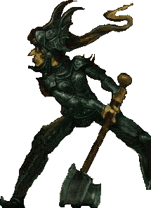

|
|
Magrat GoussedailMagrat Garlick | |
Sorcière et, accessoirement, Reine du Royaume de Lancre. C'est la plus jeune sorcière du couvent dont Mémé Ciredutemps jure ne pas faire partie. Elle a été choisie et formée par Bobonne Pleurniche, sorcière sympathique et méthodique qui montrait plus d'attrait les écrits de toute sorte qu'il est communément admit chez ses consoeurs. Magrat n'est pas à proprement parler "belle", ou pas dans le sens utilisé par les communs des mortels. Elle a tendance à loucher quand elle réfléchit. Elle est aussi plate de poitrine q'une planche à pain où se seraient égaré deux petits pois. Bien qu'elle appelle ça du "flou artistique", la réalité est plutôt que quoi quelle impose à ses cheveux, il ne leur faut pas bien longtemps pour ressembler à une grosse pelote de laine après le passage d'une armée de chatons. Elle n'hésite jamais à s'engager dans toute bonne oeuvre qui passe à sa portée, même si les personnes directement concernées n'ont ni le besoin ni l'envie Cependant, elle est suffisamment intelligente et a suffisamment de sens pratique pour faire les choses à sa manière. Il arrive même que ça marche ! Elle est très romantique et possède sans aucun doute la plus grande collections de colifichets et autres liste de signes cabalistiques de toute sorte et formes. Dans Nobliaux et Sorcières, elle fait un bref essai de la garde robe façon Jeanne d'Arc allant au mariage d'une Valkirie. Et elle aime ça. Enfin, maintenant à une position importante du royaume de Lancre, elle va pouvoir faire le bien autour d'elle (bon gré mal gré) et elle en est très contente. Magrat peut être dénichée dans : Trois Soeurcières, Mécomptes de fées, Nobliaux et Sorcières. |